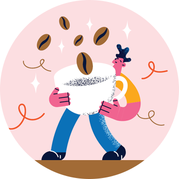
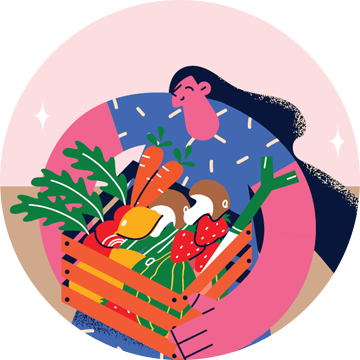
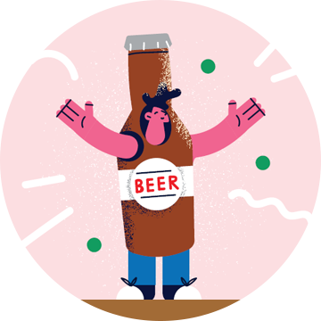
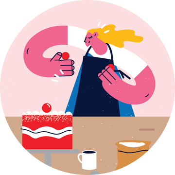

다른그림찾기
EVENT
두 눈 크게 뜨고
두 사진 속 다른 부분을 찾아주세요!
이 세상에는 셀 수 없이 다양한 음식들이 존재한다. 최근 TV, OTT 등에 소개되는 먹방, 맛집 소개 프로그램만 봐도 그렇다. 맛도 좋고 영양까지 고루 갖춘 음식을 한입에 넣고 음미하는 상상 만으로도 입가엔 미소가 절로 지어지고 행복해지는 기분이다. 이쯤 되면 이 맛있는 음식을 만드는 사람들은 누구인지 궁금해진다. 우리를 먹고, 마시며 즐길 수 있게 해주는 직업을 소개한다.

커피와 관련된 일을 한다고 하면 흔히들 바리스타를 생각하지만 커피와 관련된 업무는 꽤 다양하다. 그중에서도 큐그레이더는 생두의 품질과 맛, 특성 등을 감별해 커피의 등급을 정하는 직업이다. 수입한 생두를 평가, 관리하며 로스팅한 원두의 상태와 원두를 분쇄한 뒤 커피를 평가하는 역할까지의 업무를 수행한다. 이들은 정확한 커피 감별을 위해 끊임없는 후각과 미각 훈련을 하고 규칙적인 식생활을 기본으로 한다.
자연에서 식탁까지, 자연이 준 선물
채소와 과일 보관 방법 및 조리 등 전반의 지식을 도와주는 직업이 있다. 채소와 과일의 맛과 가치를 배우고 전달하는 채소소믈리에가 그 주인공. 채소소믈리에는 채소나 과일의 가치와 매력을 찾고 그에 대한 정확한 정보를 전달하는 전문가인 동시에 이와 어울리는 재료들의 조리법을 연구하는 요리사이다. 식생활을 바로잡아주고, 소비자와 생산자의 연결고리가 되는 역할을 한다. 농장에서 출발해 소비자의 식탁에 가기까지의 전 과정에 대한 전문적인 지식을 갖추어야 한다.

하우스 맥주 양조장에서 맥주 제조부터 판매까지의 전 과정을 직접 관리, 감독하는 양조기술자를 브루마스터라고 한다. 맥주 재료와 가공방법, 기계에 따라 색다른 맛의 맥주 타입을 결정하고 주재료인 효모와 맥아, 홉 등을 감별하는 일에서부터 배양, 발효하여 숙성시키는 일을 직접 한다는 점이 맥주공장과 다르다. 완성된 맥주의 품질을 판매 가능한 상태로 만드는 일까지가 이들의 역할이다. 꼼꼼함과 집중력을 필요로 하고 튼튼한 체력도 중요하다.
음식에 옷을 입히다
푸드스타일리스트는 음식에 디자인 요소를 가미해 더욱 맛있고 훨씬 아름답게 보이게끔 만드는 직업이다. 이들은 광고, 드라마, 잡지 등에 음식을 이용한 연출을 진행하며 레스토랑의 새로운 메뉴를 개발하고, 요리책에 조리법을 소개하는 등의 일을 하기도 한다. 푸드스타일리스트에게 조리는 필수 능력이며, 음식에 대한 전문적 지식과 이해도 갖춰야 한다. 여기에 디자인 감각과 색채감각이 더해진다면 금상첨화가 아닐 수 없다.